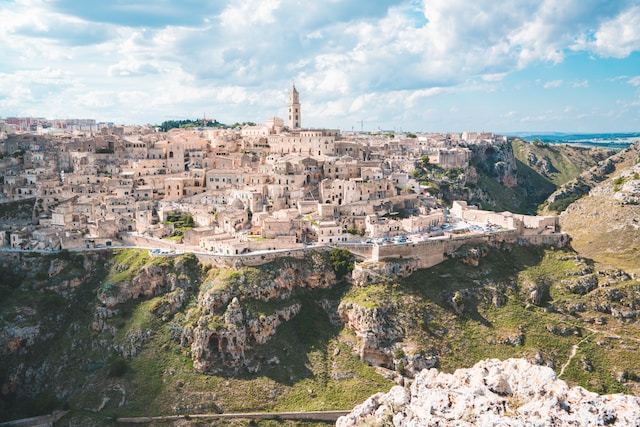
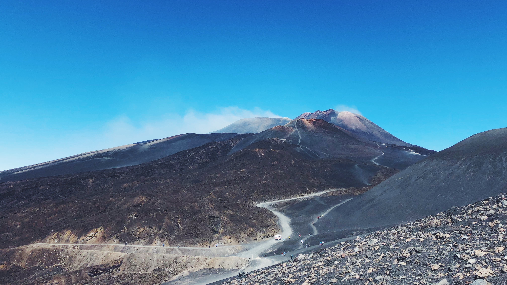

1 / 3

Matera
2 / 3

Etna
3 / 4

Castel del monte
4 / 4

Venetië en de lagune
Het land met het meeste werelderfgoed
Iedereen weet dat wel dat Italië veel geschiedenis, kunst en cultuur kent.
Maar wat veel mensen niet weten is dat Italië het land is met het meeste UNESCO werelderfgoed!
Met maar liefst 58 locaties verslaat Italië net China met 56.